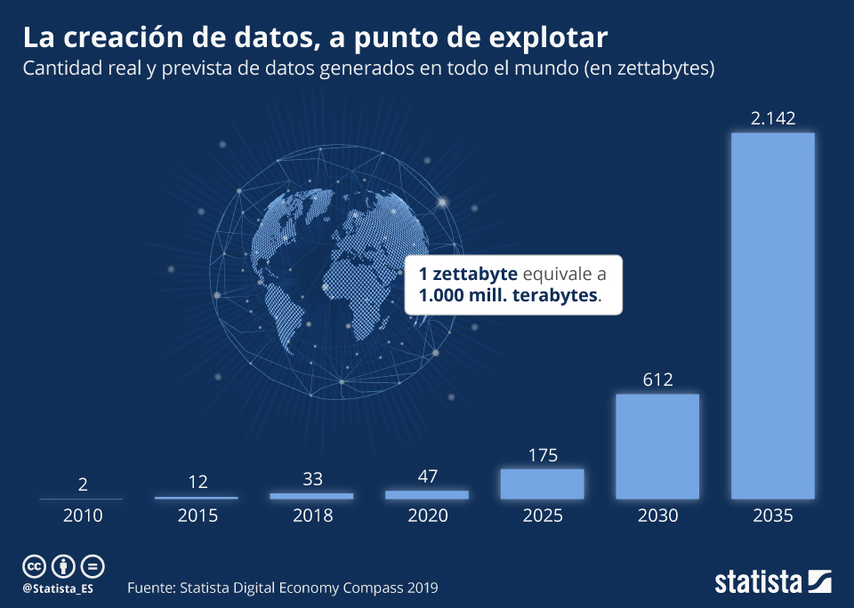

Ya sea mediante formularios web, datos analíticos de redes sociales, instrumentos científicos de medición, registros de ventas en un comercio, o de muchas otras formas, cada vez más las personas tienen crean o tienen acceso a grandes volúmenes de datos.
Veamos de donde pueden proceder estos datos de forma que cumplan con las cuatro primeras v: volumen, velocidad, variedad y veracidad.
1. Fuentes de datos
Además de los datos estadísticos que pueden recoger las administraciones y empresas especializadas, si tienes un teléfono móvil, simplemente con todo lo que haces con él, desde las redes sociales y todas las apps que usas, debes saber que queda registrado como un dato y las empresas recogen estos datos para utilizarlos para sus negocios.
También el internet de las cosas, los aparatos inteligentes como los relojes, las lavadoras y hasta los coches de auto conducción, hacen que se generen más y más datos y esto es una tendencia que no va a parar. Cada año se generan más datos y esto es algo que ya vimos en este gráfico donde mostramos una estimación de los datos que vamos a seguir generando mundialmente.
Recuerda que si lo necesitas puedes activar los subtítulos del video.
El volumen de datos ha crecido exponencialmente en los últimos años y se espera que este ritmo se acelera aún más:

Motus dice Reflexiona sobre el gráfico anterior
A la vista del gráfico anterior podemos reflexionar grupalmente sobre las siguiente cuestiones:
¿Crees que son suficientes estas herramientas para trabajar con estos Zetabytes de datos?
¿Qué crees que se puede hace con tantos datos?
¿Dónde se guardan todos estos datos?
¿Quiénes están interesados en estos datos?
Un zetabyte o zettabyte es una unidad de almacenamiento de información cuyo símbolo es el ZB, equivale a 10^21 bytes.
2. Obtenemos datos públicos
Supongo que tendrás interés en conocer las posibilidades de tu futuro laboral en relación a los estudios posteriores que quieras realizar.
En España, el Instituto Nacional de Estadística (INE) es el organismo encargado de publicar muchos datos de que dispone la administración en lo que se conoce como Open Data. Entre estos datos están las variaciones en la tasa de actividad. Una referencia a tener en cuenta es la Encuesta de Población Activa (EPA), que se realiza desde 1964, y se trata de una investigación de periodicidad trimestral que tiene en cuenta a las familias, con la finalidad de obtener información acerca de la fuerza de trabajo, así como la población que se encuentra fuera del mercado laboral.
Vamos a realizar una actividad de recopilación de datos desde el INE sobre el empleo según los estudios cursados.
Para ello, procedemos de la siguiente forma:
1. Búsqueda por categorías
Accedemos a la página con el siguiente enlace al INE
En la página inicial veremos que los datos están organizados por temas.
2. Subcategoría
Seleccionamos "Sociedad" y encontraremos varias subcategorías.
De estas subcategorías desplegamos la pestaña de "Educación y cultura.
En cualquiera de las categorías podemos acceder y descargar datos estadísticos de cualquiera de los temas de los que el INE dispone de información.
--
3. Encuesta
4. Tabla resumen
Ahora veremos una tabla resumen de los datos estadísticos de la encuesta.
Click para aumentar
5. Descargamos las tablas
Bajo la tabla resumen tenemos las tablas los enlaces de descarga de los datos de las tablas más consultadas.
En este caso seleccionamos la "Tasas de actividad, empleo y paro de los graduados universitarios por sexo y titulación".
6. Seleccionar
Ahora tenemos unos cuadros de texto donde podemos seleccionar los datos para una búsqueda más específica por sexo, titulación o tasa de actividad.
Finalmente tenemos la tabla con todos los datos que podemos descargar en varios formatos, de los que hablaremos más adelante y que podemos tratar con alguna herramienta.
Click para aumentar
8. Gráficos
La página del INE nos facilita el trabajo con una herramienta de creación de gráficosinteractivos o dashboard donde podemos seleccionar los valores a representar, sus colores y el formato del gráfico.
Podemos realizar distintas combinaciones para ver distintas representaciones y obtener conclusiones de sus resultados.
En la parte superior derecha tenemos la opción para descargar el gráfico.
Click para aumentar
La tasa de actividad es un índice que mide el nivel de empleo de un país. Se calcula como el cociente entre la población activa (PA) y la población en edad de trabajar o mayor de 16 años.
Tarea: Ahora que sabes crear los gráficos podemos crear gráficos con distintas opciones.
Crea los siguientes gráficos, descárgalos y reúnelos en un documento de procesador de texto:
Grafico de hombres y mujeres, por los 9 grupos de titulación (01 -EDUCACIÓN, 02 - ARTES...), tasa de paro, barras verticales.
Grafico de hombres (en verde) y mujeres (en azul), por los 9 grupos de titulación (01 -EDUCACIÓN, 02 - ARTES...), tasa de empleo, barras apiladas.
Grafico de hombres (en rojo) y mujeres (en amarillo), por los 2 grupos de titulación (06 - INFORMÁTICA, 07 - INGENIERÍA...), tasa de paro, barras horizontales.
Grafico de ambos sexos, titulación total, tasa de empleo y tasa de paro, gráfico circular, color por defecto azul claro.
3. Debatimos sobre la información
Realizando una nueva selección de datos en el INE, encuentra los datos para realizar un gráfico de barras horizontales en el que podamos comparar los graduados universitarios por titulación y sexo en las titulaciones de la imagen.
Con los resultados obtenidos realizaremos un debate en el aula:
¿Son sorprendentes los resultados?
¿Cuál es tu opinión sobre estos resultados?
¿Cuál crees que es la causa?
¿Crees que se podría hacer algo para que fuesen distintos?, ¿qué se te ocurre?


 Seleccionamos "Sociedad" y encontraremos varias subcategorías.
Seleccionamos "Sociedad" y encontraremos varias subcategorías.


{kind=link}